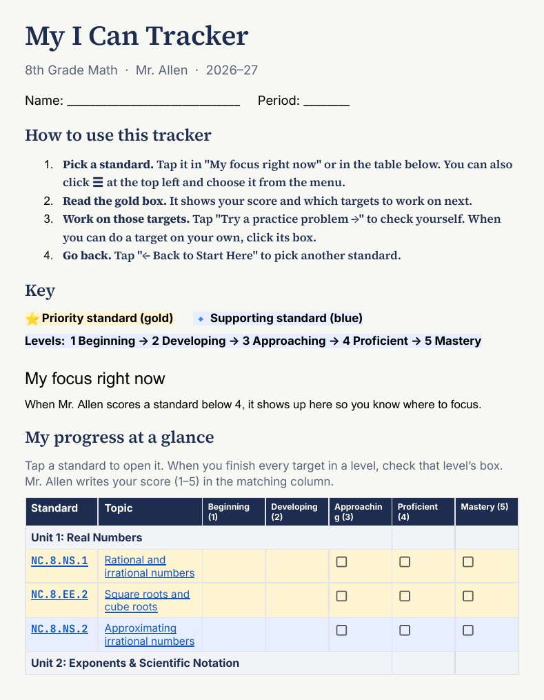
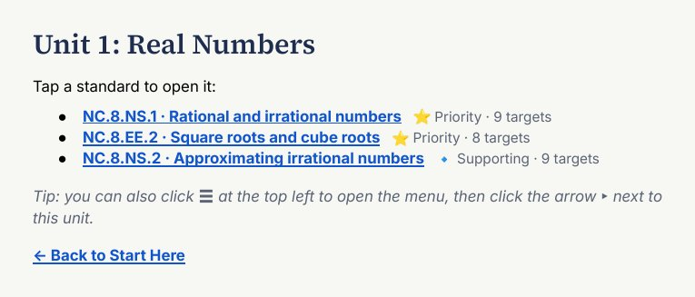
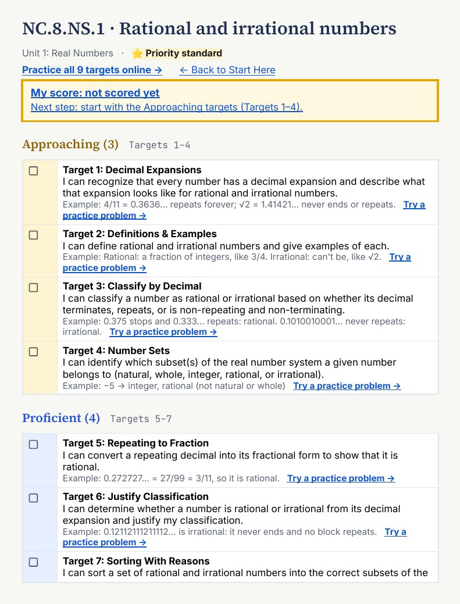
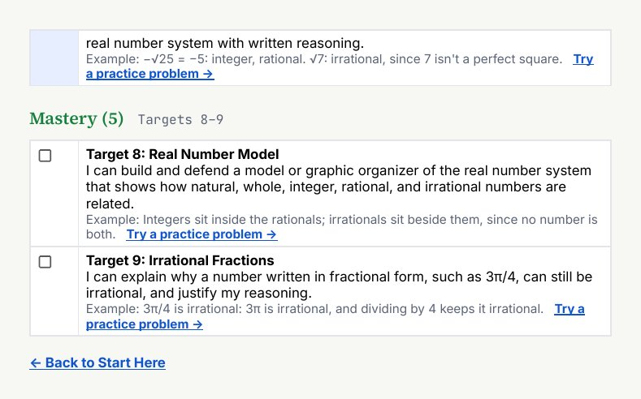

How your grade works, what each standard asks you to do, and how to track your own progress.
In this class, your grade tells what you know and can do for each math standard. It is not an average of every point you ever earned.
A standard is one big skill from the North Carolina Math 8 course, like NC.8.EE.1: use the rules of exponents. You get a score from 1 to 5 for each standard. That score shows how much of the standard you have learned so far.
Every assignment is worth points. Homework, effort, late work and tests all get mixed into one percent. A bad week in September can pull your grade down all year, even after you learn the skill.
Each standard gets its own score. Practice is for learning, so it counts very little. When you show that you learned a skill, your newer work counts the most. Your grade shows where you are now.
| Category | Weight | What it is for |
|---|---|---|
| Formatives | 0% | Practice, feedback, and snapshots of how your learning is going. |
| Quizzes & Projects | 10% | Check-points where you apply the skills. |
| Unit Assessments | 90% | Final evidence that you have learned each standard in a unit. |
Grades are kept in Infinite Campus. Re-testing and extra credit are handled one student at a time. Talk to Mr. Allen.
Every standard is scored on the same scale. The I can targets for each standard are sorted into three levels: Approaching, Proficient and Mastery. They show you exactly what to learn to move up.
| Score | Level | What it means |
|---|---|---|
| 5 | Mastery | You can do the hardest problems for this standard, explain your thinking, and use the skill in new situations. These are the Mastery targets. |
| 4 | Proficient | The goal for everyone. You can do grade-level problems for this standard on your own. These are the Proficient targets. |
| 3 | Approaching | You can do the basic parts of the standard. You are close. These are the Approaching targets. |
| 2 | Developing | With help, you can do some of the basic parts. Keep practicing the Approaching targets. |
| 1 | Beginning | Even with help, you are just getting started on this standard. |
A 3 is not a C. A 4 means you met the grade-level standard. A 5 means you went beyond it.
You will be assessed on most standards more than once. Infinite Campus combines those scores with a decaying average. "Decaying" means older scores fade. Your newest score counts the most.
Jordan (a made-up student) took three assessments on one standard. In order, Jordan scored 2, then 3, then 4.
The decaying average rewards growth. If you struggle at first and then learn the skill, your grade moves up to match what you know now.
Pick scores in the order they happened, oldest first.
The grade book is cumulative: it does not start over each quarter. A standard's score keeps getting updated as you show new evidence, from Quarter 1 through Quarter 4. Early struggles will not lock in a low final grade once you show you have learned the skill.
At the end, the standards in each domain (like Geometry or Functions) are averaged into a domain score. Your final course score, on the 1–5 scale, is a weighted average of the domain scores, along with the EOG score where it applies.
You have your own I Can Tracker in your student folder in Google Drive. Open it with your school account. It is one document with your scores and every I can target, so you can see where you are and plan what to work on next.
My focus right now lists up to 3 standards to work on first. Tap one to jump to it. My progress at a glance shows your 1–5 score for every standard.
A gold box at the top shows your score and your next step. Below it are the Approaching, Proficient and Mastery targets. Each target has a box to check and a "Try a practice problem" link.
These are blank samples, for viewing only. Your own tracker with your scores is in your student folder.




Every standard is broken into small steps called I can targets, sorted into Approaching, Proficient and Mastery. Each target has a practice question you can try right on the website.
Besides math standards, IC Imagine also scores three durable skills on the same 1–5 scale: Perseverance, Peer Collaboration and Self-Regulation. These are habits that help you learn in every class.